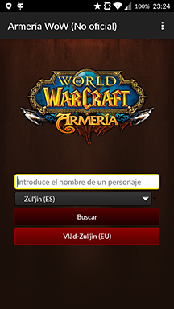
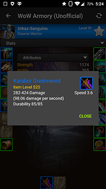
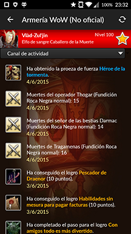
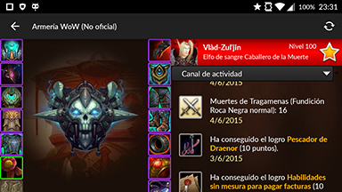
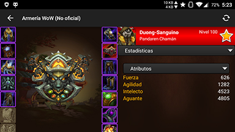

Information
Platform: Android
Languages: English/Spanish
Download App [APK]
What is WoW Armory (Unofficial)?
WoW Armory (Unofficial) is the final project for "Mobile Devices Applications" subject.
The app uses the official Blizzard API to get the data form their servers and shows basic information of the searched character. The search can be performed on any realm from Europe or America.
The localized strings to English and Spanish are obtained from the API, and the icons are downloaded from the Blizzard site and stored in the internal storage for future usages.
Tools used
- Android Studio (Java)
Screenshots




